Introduction
This study was carried out by Greenspector, a company specializing in the impact of digital technology, and EVEA, specializing in analyzes of the environmental impact of products. This study is based on:
- a calculation methodology initiated as part of the CONVINcE project on the energy consumption of video. A project involving several players such as Orange, Sony …
- energy and resource consumption measurements carried out on the myCANAL application to support hypotheses
- collection of data on the use and infrastructure of Canal +
- a bibliographic study to identify and correlate emission factors and energy consumption
Study summary :
– Methodology
– Results : consumption, overall impact and projection
– Areas for improvement
– Conclusion – points to remember
– Chief Digital Officer – Canal+ testimony
Methodology
The functional unit of this study is defined as follows: “Watch 1 hour of video, live or in a replay, on the Canal + interfaces”.
Disclaimer: The purpose of this study is to estimate, by orders of magnitude, the carbon impact of playing a video on Canal + interfaces. To date, it is based on reliable and robust sources and is intended to be representative of the reality of the Canal + infrastructure. However, this is not a complete Life Cycle Assessment (LCA). We rely on LCA methodologies but, for example, we have not performed a sensitivity analysis that would allow min-max deviations on the values. However, this study made it possible to formalize an analysis benchmark for the carbon footprint of a video service, and it could be used to monitor the evolution of the carbon footprint over time. And all this in no way detracts from the consistency of the data for its primary use.
Means of access to services
We have listed different ways to access myCANAL video services. Depending on this type of access, it is necessary to have more or less material (s). This inventory is needed to assess the impact of accessing video services. We have classified the means by category:
- Canal + decoder
- FAI TV Box
- TNT Box
- Game console
- IP TV (Android TV, Samsung TV)
- PC / Mac Multimedia Gateway with ISP Internet Box
- Smartphone / Tablet with ISP Internet Box or GSM access
For Decoder, TV / TNT Box, Console, and Multimedia Gateway access, it is necessary to add a TV. We have ruled out all special cases of viewing considered as anecdotal compared to other accesses such as:
- Display of the PC stream on a TV,
- Multiroom viewing
Regarding the link between the terminals and the Boxes, we will consider that the Wi-Fi connection and the wired connection (Ethernet) have no impact on the consumption of the terminals (PC and TV).
Definition of visualization
Visualization quality influences end-to-end power consumption. We have taken the following 3 main definitions:
- SD (Simple Definition)
- HD (High Definition)
- UHD / 4K (Ultra High Definition)
The definition depends on 3 factors:
- compatible program availability
- material compatibility in terms of quality
- the quality of the connection (the quality of myCANAL videos is adapted according to the connection speed).
Greenspector’s exploratory measurements on myCanal show the impact of SD, HD, or UHD video consumption on smartphones, and then on laptops:
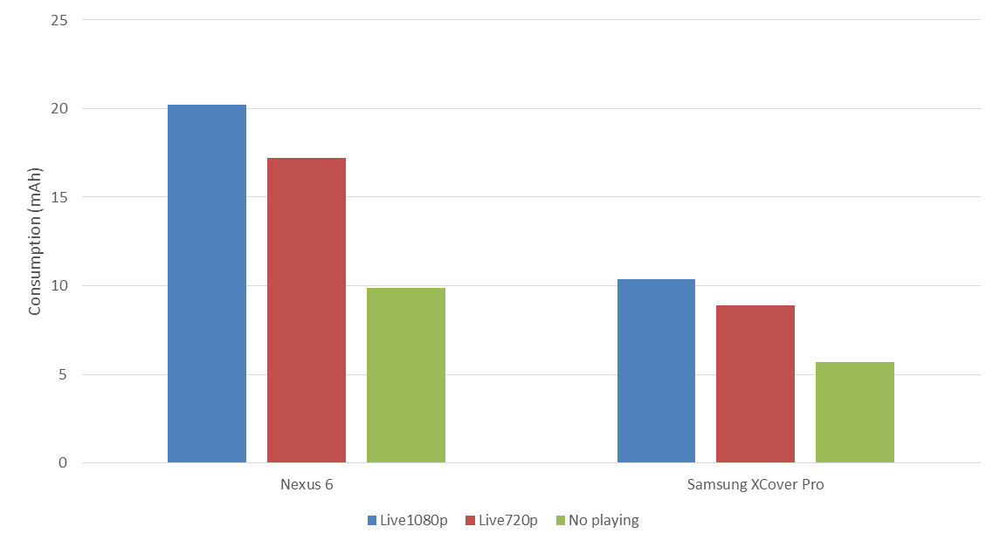
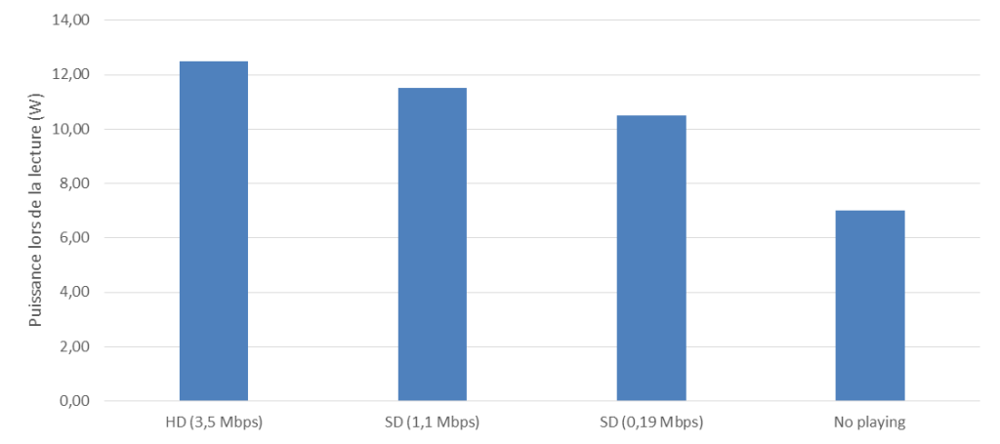
Bibliographic sources were used for the consumption of other platforms such as Consoles (Source 1), TV (Sources 1 and 2), Set-Top-Box (Sources 1 and 2). The consumption of Canal + decoders supplied by Canal + was also used.
Depending on the different equipment configurations, we obtain energy consumption which varies from 1.3 to 108 Wh / h, i.e. a ratio of 1 to 80:
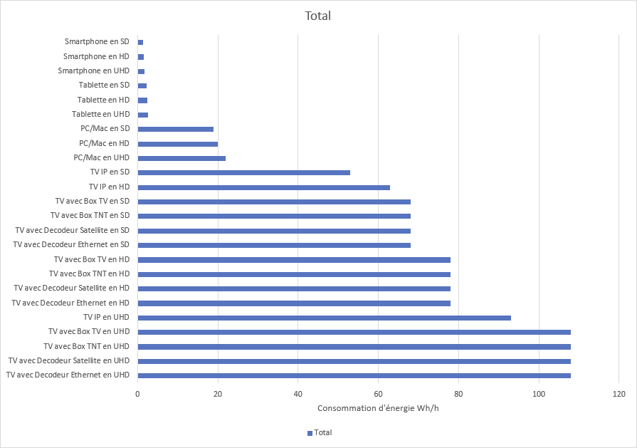
Technologies
Several parameters were taken into account in the calculations because they influence the consumption:
- Streaming technology: IPTV (Technology among ISPs), OTT (Over the Top), and Peer To Peer
- Linear (Live) or Non-linear (Replay / VOD) signal
- Broadcasting (Hertzian, Satellite, IP)
Means of connection to the network
To access the services, the infrastructure considered takes into account: the user’s equipment (Box among others), access to networks (GSM, Fiber, etc.), and the heart of the IP network.
We used calculation methods that are widespread in the scientific literature and standardized by ETSI. The principle is to take an « energy / typical use » ratio in Wh/Go. Although the network infrastructure has a fairly fixed consumption and does not depend on the use, this calculation method makes it possible to assign a global impact to a use (here one hour of video). In addition, it allows to study the improvement of networks in terms of efficiency. Beyond the search for improved energy efficiency, it also makes it possible to assess pressure on the network and to take into account the improvement in the capacity of the infrastructure.
As explained in the CONVINcE report:
« As we are looking for an order of magnitude in energy saving, we suppose that decreasing by 30% the traffic volume in the core network induces a decrease of same ratio in network dimensioning and consequently a decrease of 30% in energy consumption in the core IP network. »
We have studied the literature and listed metrics ranging from 1.3Wh / Go (figure for FTTH fiber) to 600Wh/Go. These factors fluctuate depending on the infrastructure assessment date, method (Top Down or Bottom Up) and technology. It is clear, however, that the efficiency improves over the years.
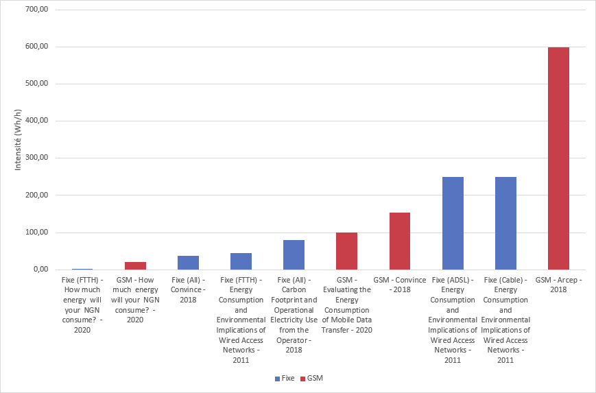
We have taken:
- 13 Wh / Go for the core network (source CONVINcE)
- 30 to 40 Wh / Go for the fixed network
- 150 Wh / Go for the GSM network (source CONVINcE)
For TNT and satellite, there are few data. However, we based ourselves on a BBC study for TNT.
Content Delivery Network
Content Delivery Networks (CDNs) are servers used to limit the load on « Top of Head » servers (serving videos) and to provide a flow as close as possible to the user. Canal+ uses CDN providers on the market but also uses its own infrastructures.
The methodology for estimating the energy intensity per GB is to bring the estimated consumption of the data center down to throughput during peak periods. Canal+ indeed knows the number of physical servers, their types as well as their speeds. As the servers are hosted by a host, certain assumptions have been made to estimate the actual consumption: among other things, an assumption of PUE (Power Usage Effectiveness) of 2, consumption per server of 250W, and a server load of 50%. The consumption of routers and storage is considered negligible compared to the consumption of servers. (Sources 1, 2 , and 3)
The energy intensity obtained is 0.13 Wh / Go, with a different value between VOD and Live. Note that this value is calculated in the event of a peak (football match for example). It can be lower (use of the total capacity of the data center) or higher (during periods of low traffic).
For lack of data, the hypothesis of the same energy intensity (Wh / Go) was taken for CDNs outside Canal + (50%). For comparison and verification, the studies listed display values from 0.04 to 1 Wh / GB. These differences can be explained by various factors:
– Improving the efficiency of data centers, old studies, therefore, lead to higher figures,
– Top-Down approaches that have a higher estimate than Bottom-Up studies (like this estimate on CDNs).
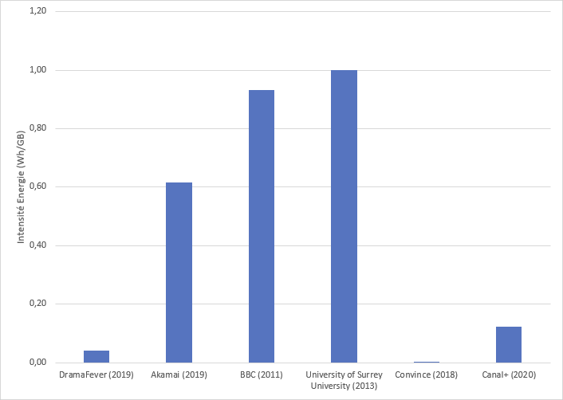
AWS application servers Excluding video: using Mycanal (catalog presentation, authentication, etc.) and watching videos involve requesting services hosted on servers (rights management, etc.). The APIs used are hosted on AWS instances.
Canal+ rents AWS instances and knows the number of VMs. A part of these VMs is purely dedicated to providing ancillary services to video.
It is difficult to know the power consumption of AWS instances because no communication or information is provided by Amazon. According to an expert, we took a value of 20W (taking into account a PUE of 2) (Source: Interview of experts on virtualization from the company Easyvirt).
We have assumed a uniform distribution of consumption concerning the number of hours visualized and we obtain a value of 0.14 Wh / h.
Video encoding servers
The « Headend » servers allow you to format videos, « package » them to the user’s format … For the OTT, up to 150 packages may be available for a single video. Here is the workflow for the OTT.
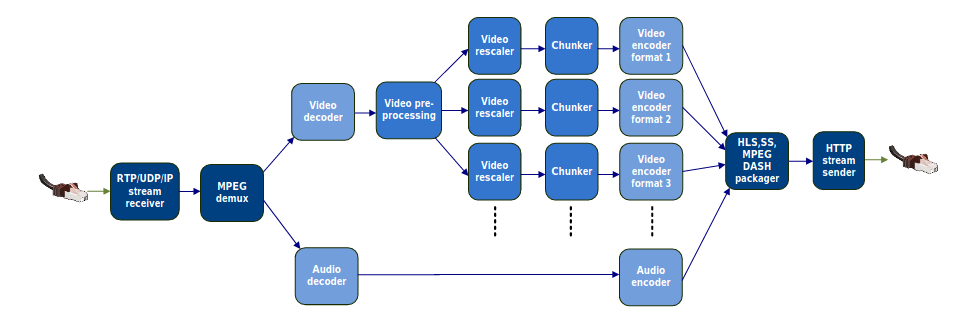
The most consuming parts are video encoding and decoding. The workflow is distributed over specific servers (for encoding) and classic servers (for formatting and packaging).
We took the figures from the CONVINcE project (considering Harmony servers identical to those used by Canal +) to estimate the energy, as well as the Canal + server data:
- For IPTV: 0.09 Wh for one hour of video
- For the OTT: 0.30 Wh for one hour of video
This difference is explained by the fact that OTT is encoded in several formats, unlike IPTV which is encoded in a high definition format.
CO² emission factors
For energy, we used the values provided by the Open Data Networks Energies database (Work of distributors such as RTE and ADEME). We used intermittent usage which corresponds more to video usage in terms of the period (evening), ie 60g CO2eq / kWh. Part of the broadcasts for the rest of the world has been added taking into account the fact that some users are outside France.
For terminal and server manufacturing emission factors, we used factors provided by Shift Project / IEA.
These factors were brought to the time of viewing by taking into account the lifespans associated with each material.
Note: Regarding the impacts of DTT and satellite, there is a lack of data on infrastructure and emission factors. However, we have integrated this part to understand the orders of magnitude of the impacts. Certain analyzes were carried out only on the IP part in certain cases (for comparison with other studies for example).
Likewise, the impact of the data center manufacturing phase outside of the servers and the network infrastructure was not taken into account as it was considered to be shared and low given the lifespan of the buildings.
Results – global projection
The supply of renewable energy to AWS infrastructures and Canal + CDNs hosted by Interxion has not been taken into account.
In one hour, on average, here are the flows that pass through the network:
| 500 000 hours of video |
| 900 TB of data |
| 3.6 GB / hr average throughput |
The number of viewing hours for Canal+ subscribers has been broken down according to the parameters listed above.
The unit data obtained previously are then projected on these uses to obtain the overall consumption. By taking these results, we can obtain the usage intensities of each part (Terminal, Network, Server) to check the consistency of the overall consumption.
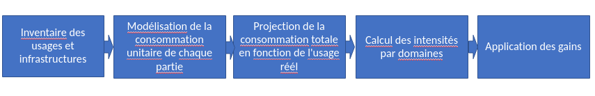
Intensity analysis
The usage intensities obtained can be compared to the Shift Project and IEA studies. This intensity is calculated by taking the distribution of devices, the use of Canal +, and keeping only the IP transfer part (without Satellite or TNT).
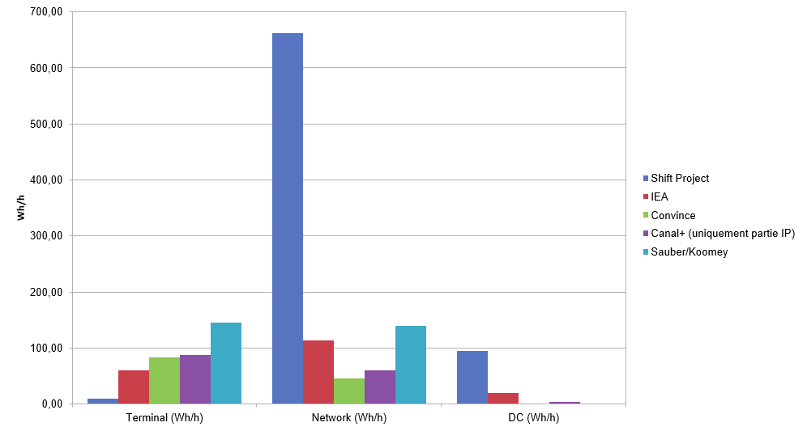
It is clear (and shared by the IEA) that the Shift Project study overestimates grid consumption. For servers, we have a fairly low value but are quite confident considering that it is based on data from a known infrastructure (with the uncertainty from Amazon servers and third-party CDNs). The estimate of the terminal part of the Shift Project seems to us to have been underestimated (shared by IEA). It seems that the IEA also underestimated many parameters and seems not to have taken into account the influence of the definition on the consumption of the terminal, certain elements such as boxes, and the consumption of new TVs that consume more. The CONVINcE study and the Sauber/Koomey analysis also validate the consistency of our study.
Impact of playing an hour of video
Across the Canal+ fleet, the average end-to-end consumption is 214 Wh per hour of video. For comparison, the IEA study announces consumption between 120 and 240Wh per hour. The breakdown is as follows:
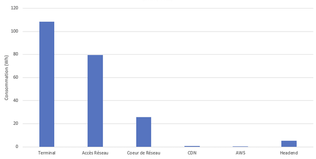
The impact in average CO2 equivalent by type of access is as follows (with the assumptions specified in the paragraph CO2 emission factors where the manufacture of Satellite, DTT, network and server hosting infrastructures has not been taken. into account)
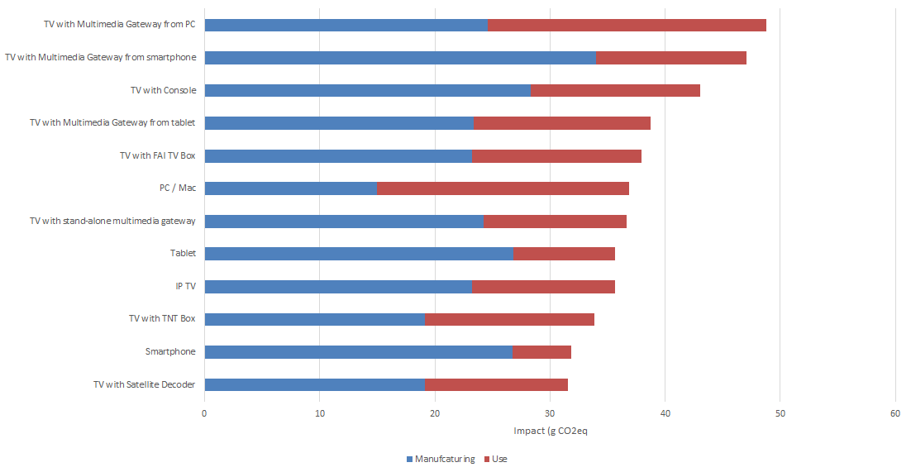
By taking the type of connection:
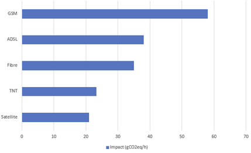
The impact ranges from 20 to 66 g CO2 eq, it depends on several parameters:
- the more or less energy consumption of the device (for example Smartphone vs TV),
- embodied energy and material life,
- the means of access to the network (for example GSM access has a greater impact than wired access),
- the viewing quality which will influence above all the share of the network (depending on a cost per Wh / Go),
- the number of materials to access the service.
By taking real uses (see the end of the document), the average is 28g CO2eq. If we take only the IP part, the average value is 37g CO2eq.
For comparison, the IEA study (2020) announces 8g CO2eq for France (for the use phase only). Another study for the US (2014) announces 360g CO2eq on the use phase (and 420g CO2eq with manufacturing). If we take a US energy mix, we get 202g which brings us closer to this study. The lower value can be explained by the differences in assumptions, in particular on the energy intensity of the network. For example, if we take for our study a TV with 4K reception, IEA announces 20g CO2eq while we rather estimate 14g (37g with the manufacturing phase).
If we look at the usage / manufacture ratio, in some cases the use has more impact (UHD in particular), while in others it is the manufacturing (IP TV or PC in HD for example).
In this same study, the estimate of the purchase of a DVD is 400g EqCO2, which therefore leads to the impact of watching a 2-hour video. 5 times less than that of buying a DVD in France and equivalent in the US.
Consumption and overall impact
The result of the total energy consumption of viewing Canal+ videos over IP is 900 GWh per year with a greenhouse gas impact of 159,000 tonnes CO2eq.
For comparison, annual French consumption is 473 TWh per year (Source RTE) and France’s 2017 carbon footprint (national emissions + imports) is 749 Mt CO2 eq (source: Haut Conseil pour le Climat – 2019 report). The consumption of the Canal + fleet by IP is therefore 0.18% of energy consumption and 0.016% of the French carbon footprint.
The end-to-end distribution is as follows:
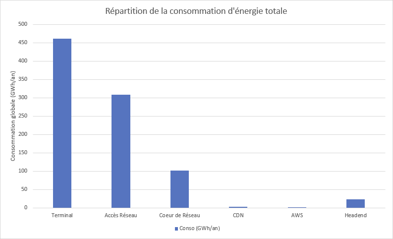
Most of the consumption is on the user’s premises (terminal and part of the network access). Indeed, it is necessary to have the equipment (TV, Box, Smartphone …) which is not shared like the servers.
To validate the consistency of this projection, we took the consumption of CDNs specific to CANAL as well as to suppliers. We have a consumption of Canal + CDNs of 2.6 GWh (and estimated at 7 GWh for suppliers) excluding video head-ends which are not at Interxion. We get 12 GWh with the projection, which validates the model.
If we look at the distribution of the impact in greenhouse gases, we have the following distribution:
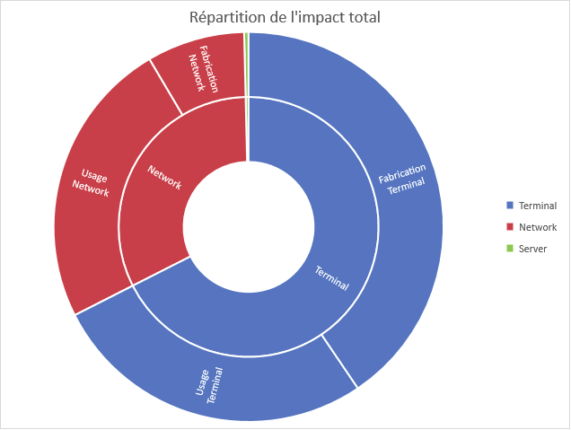
A large part of the impact comes from the manufacture of user terminals. On the network part, the manufacture of Boxes (FAI, Satellite …) also has a significant impact.
Areas for improvement to limit the impact of services
General strategy
As we have seen in the network part, efficiency improves. The same is true for terminals. But on the other hand, 4K will become widespread, networks will continue to increase their capacity and therefore increase the overall impact of consumption. By taking one of the hypotheses of a 30% improvement in network efficiency (according to the trends set out in the studies listed in the Networks section of this report) and an increase in average throughput of 20% over 3 years as well as of 20% of the hours viewed, as well as a transfer of 75% of the hours viewed from all interfaces to that of the OTT, we estimate an increase in the energy consumed by 39% and the impact of greenhouse gases greenhouse by 23%. This simplistic projection allows us to approach a more realistic consumption in 3 years.
To offset this increase, and optimize the impact of video playback, we examined the impact of the following projects carried out by Canal+:
- Switching from H264 encoding to HEVC
- Switching to multicast for live
- Switch audio encoding from AAC to AC4
- Strengthen bitrate downsizing
- Improve the interface and the software layer
- Help the user on their digital impact
These projects are not exhaustive. Other possible areas for improvement have been identified which could be launched subsequently by Canal+.
The measurements, estimates, and models that allowed us to obtain the overall impact were used to quantify the estimated gains.
Note on optimizing video servers:
The energy consumption of video servers is very low, as is their impact, as the hardware has a high lifespan (10 years). Several optimizations are under study (video passage Just-in-Time among others). However, these optimizations provide very little end-to-end gain. They are however necessary to optimize management and reduce storage size (impact not taken into account in this study because it is low). Optimizations such as switching to HEVC have a stronger impact (this is confirmed by the CONVINcE study).
“The “Just In Time Transcoding” approach will allow to reduce the number of video representations stored in the CDN and thus its power consumption. This is an end-to-end approach to be compared to the global abovementioned one consisting of reducing the bandwidth of the network by using the most efficient encoding technology (HEVC/AVC).
On CDNs in the same way, even if the impact is low, certain actions such as increasing the rate of use of Canal + infrastructures (using a transfer of flows from supplier CDNs to own CDNs) will improve the efficiency.
Switching from H264 encoding to HEVC
The HEVC video codec is about 20% more efficient than the H264, and a large number of devices are now compatible. For a 3-year projection of consumption, we have taken an increase in the market share of HEVC compatible devices (Box, Smartphone, etc.).
For users who are on 1080p 5Mbits to date (34% of users currently) as for users restricted to 720p for technical reasons (for example a limitation of the network), a 20% drop in consumption is expected. For other 1080p compatible users, there is no decrease in consumption, but an increase in quality with superior grip.
A new even more efficient format begins to appear (AV1), saving an additional 20%. However, very rare equipment is compatible: the transition is largely premature, we would hardly gain anything to date because the fleet is almost zero.
Switching to multicast for live
Broadcasting in hybrid multicast / unicast adaptive streaming for the OTT will greatly reduce the use of bandwidth, and therefore power consumption.
Usable only for live stream, it ensures that a single stream is sent for all customers to the final delivery point. This project will be accompanied by other ancillary projects such as the switch to CMAF packaging. The CMAF audio/video packaging format allows you to have exactly the same video files for all platforms.
Switch audio encoding from AAC to AC4
Currently we mainly use AAC audio, from 96kbits to 128kbits.
The EAC3 + is widely compatible to date and improves audio quality at equivalent bitrate while allowing 5.1. Switching to EAC3+ would be at a fixed rate, without hoping to save bandwidth (while 20% more efficient than EAC3 +).
On the other hand, the new AC4 format is 50% more efficient than the EAC3 + and would allow the audio bit rate to be divided by 2. Even if the share of the video is greater, the gains at the global level are not negligible.
Strengthen bitrate downsizing
To date, except in Africa, or on a cellular network (so as not to empty the customer’s subscription), the quality of the video is adequate . On PC, quality adaptation is possible but access is not necessarily easy.
Making the possibility of reducing the size more accessible by different means (improvement of the interface, communication, etc.) would make it possible to redirect some of the users to a lower but sufficient quality.
Taking into account the increase in video quality and that of network performance, quality caping by users of Canal + services should represent in 3 years a gain of 20% in average speed compared to that generated by uncapped use.
In this axis, several elements have not been included in the gain projection but are possible to help the user in his impact. For example, the Greenspector mobile measurements show that it is better (under favorable conditions such as wifi) to use downloading rather than streaming. Indeed, here is the comparison for a 45mn video (with 5mn download):
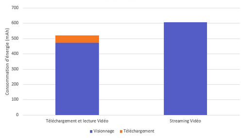
This is partly explained by the fact that when viewing the downloaded video, the radio cell is not used while it is much more during streaming.
Improve the interface and the software layer
Part of the impact of viewing an hour of a video comes from the interface. Indeed, viewing the catalog, managing subscriptions (via APIs), processing playlists … are necessary functions. Greenspector measurements showed that this could represent 10% of terminal consumption:
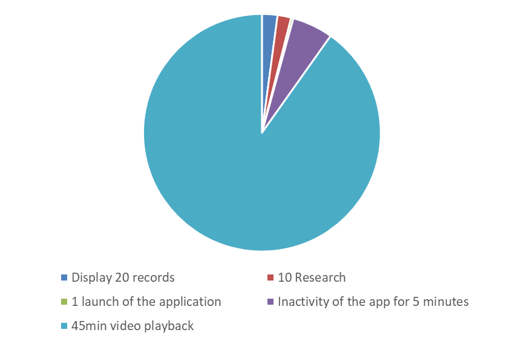
Improving the interface on all platforms (smartphone, PC, etc.) would therefore make it possible to obtain significant gains. It would also allow, beyond reducing the impact, to limit the exclusion of certain people as well as the obsolescence of platforms.
Among the actions identified:
- Switch to the dark mode
- Reduce the overall impact of the software layer
- Improve UX
- Limit the integration of third-party libraries
Help the user on his digital impact
Much of the impact of video playback is not directly related to video playback. Canal +, through its large audience, can act by making users aware of the impact of digital technology. If some of the users take these actions into account, the impact can be reduced. Among these actions:
- Extending the life of the user’s equipment,
- Use Ethernet rather than Wifi, rather than 4G,
- Extinction of equipment out of use.
Results
Here is the projection of the various energy gains:
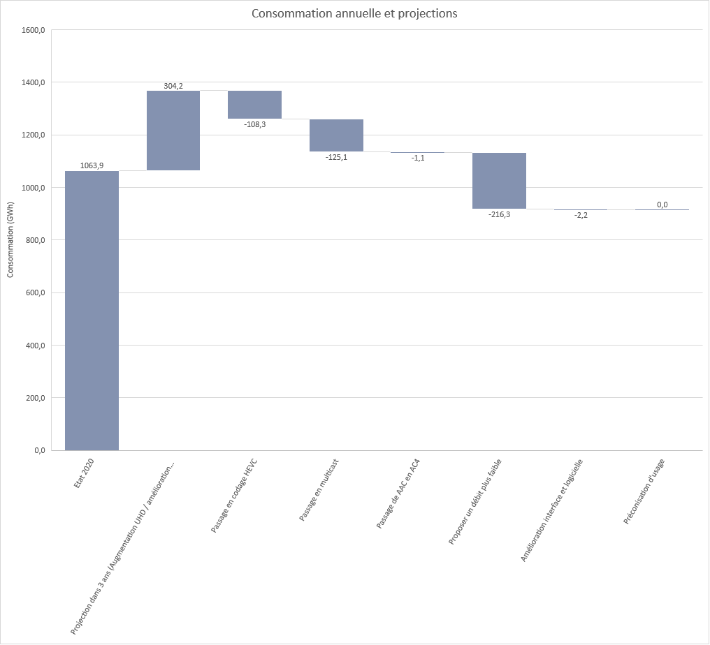
The improvements compensate for the increase in energy consumption and even allow a gain of 14% compared to the current situation. For the greenhouse gas impact, we obtain a gain of 8%.
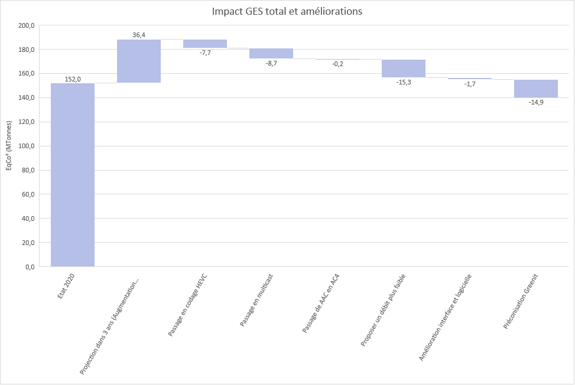
There are many ways to reduce the carbon impact of streaming activities for Canal + by 30%, and the actions put in place will make it possible to make a gain of 26% on the environmental footprint of services and in particular -31% for the consumption in OTT only.
Conclusion – to remember
This study has uncertainties on future use, on the emission factors of each element as well as on the potential gains. However, the objective is to challenge the choices or even to rule them out (some actions not listed in this document have, for example, already been discarded), if they had no gain. One of the first actions is to be able to measure yourself in order to improve. This is the goal of this phase. Now comes that of improvement.
The environmental interest of the sites identified by Canal+ has been confirmed. Their implementation will make it possible to offset the effects of the growth in uses, or even more, in the years to come.
The conclusions of this evaluation evolve with many technological parameters but in summary:
- Work on video and audio compression formats while taking into account new formats optimized by manufacturers.
- Optimize the consumption of user functions to access the content.
- Involve/guide users in the choices according to the context of use (streaming, type of network, device screen format, etc.) and lead them to extend the life of the equipment to reduce the impact.
- Implement hybrid multicast / unicast adaptive streaming for OTT to dramatically reduce bandwidth usage and power consumption.
- Pursue end-to-end measures to avoid future decisions that shift the impact without reducing it
Pierre-Emmanuel Ferrand, Chief Digital Officer at CANAL+
Testimony
– How does this assessment and improvement process fit into the Group’s strategy?
CANAL+ is anchored in its time. We have decided to become more involved in a major issue of our time, dear to our subscribers and users of myCANAL: the protection of our environment. CANAL+ was very early on as a pioneer in eco-responsible approaches. first. In addition to the rental model of decoders, which is very virtuous from the point of view of the circular economy, Canal+ organized in 1988 the recovery of old decoders to ensure their return to service or their recycling. Moreover, as a publisher, We have produced eco-responsible productions including series that have been exemplary on this subject, Baron Noir, L’Effondrement, and more recently OVNI (S).
-What main lessons/contributions do we draw from this work (on the design of services)?
This work allows us first of all to identify the technical projects to prioritize to minimize the carbon footprint of myCANAL video consumption as much as possible. At the same time, the lessons guide us on the awareness messages to relay to our users, throughout our future developments. This commitment to cooperation between our technical developments and our users is the key to consumption that has less impact on the environment.
– What role do users play?
Protecting the environment is a priority for them. Their role is central to our approach. Our challenge is to offer them a platform offering the best content and the best video quality adapted to their equipment and their reception capacities to reduce the effects on the environment. By raising their awareness and supporting them in responsible actions, they too will be able to get involved, as they do in other areas for a more eco-responsible society.